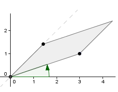

Determinantes e Áreas

Sinal do Determinante
Determinantes podem ser negativos, mas áreas não. Será que isso invalida a relação que você identificou entre área de paralelogramos e determinantes?
Para esclarecer essa dúvida, use o quadro ao lado. Nele, um dos lados que determina o paralelogramo está fixo. Já o outro (azul) pode ser movido para onde você quiser.
Nesses casos, os três pontos que determinam o paralelogramo estão sobre a mesma reta, o que faz com ele se degenere numa reta e tenha, portanto, área igual a zero.
Mas, agora que você descobriu que o determinante pode ser negativo, como fica a relação entre área e determinante?
Clique o botão abaixo para exibir uma outra matriz, igual à existente no quadro, mas com as linhas invertidas:
O ponto que deve ocupar a primeira linha da matriz é aquele determinado pelo primeiro segmento que aparece à medida que se gira no sentido anti-horário a partir da parte positiva do eixo X, como ilustra a figura abaixo.
Se essa regra for respeitada, o determinante será sempre igual à área do paralelogramo. Caso contrário, terá o mesmo valor absoluto, mas sinal negativo.
Corrigir todas as questões Continuar